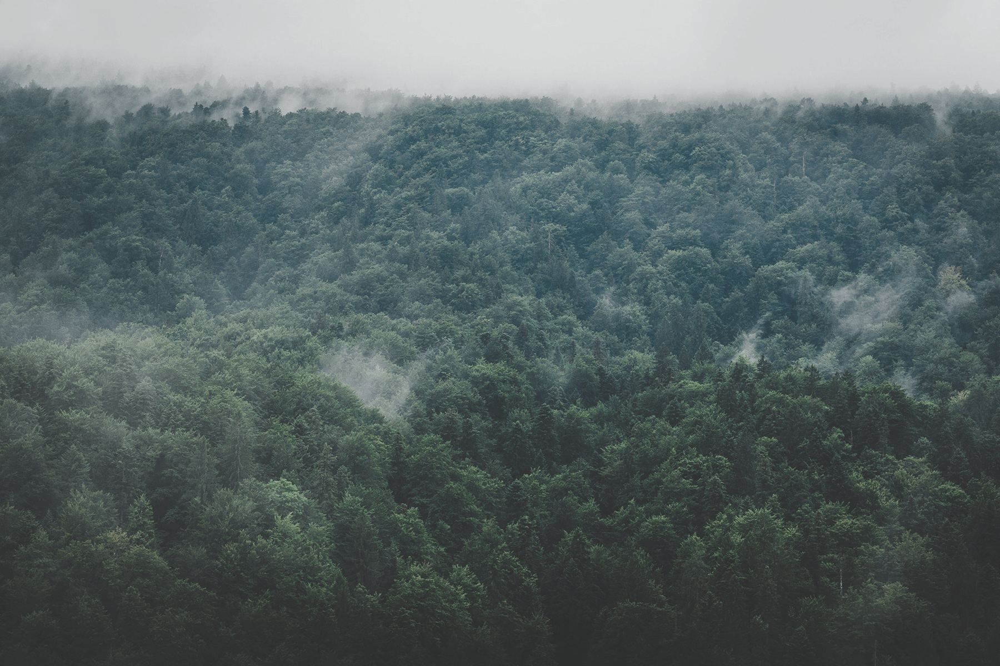

Luku 01 / 03
Paikka
Talo on koottu kolmesta matalasta rungosta, jotka seuraavat niityn loivaa kumpua. Ulkoverhous on tervattua kuusta ja katto samaa sävyä kuin seinät – rakennus painuu maisemaan eikä nouse siitä.


Arkkitehtitoimisto / Helsinki / vuodesta 2014
Suunnittelemme asuinrakennuksia, huviloita ja sisätiloja paikan ehdoilla – vähän, mutta tarkasti.
Katso työtKuvassa Talo Harmaa — Enontekiö, 2024
68°23′ N — 23°38′ E
(01) Lähtökohta
Jokainen työmme alkaa paikasta: maastosta, valon suunnasta ja siitä, mitä sinne ei kannata rakentaa. Piirrämme vähän, mutta tarkasti – ja annamme ajan tehdä loput.
(02) Projektit
2021 — 2025
Tyyppi: Vapaa-ajan asunto
Sijainti: Kemiönsaari
Vuosi: 2025
Tyyppi: Asuinrakennus
Sijainti: Enontekiö
Vuosi: 2024

Tyyppi: Sauna
Sijainti: Sysmä
Vuosi: 2024

Tyyppi: Sisätilat
Sijainti: Helsinki
Vuosi: 2023

Tyyppi: Asuinrakennus
Sijainti: Porvoo
Vuosi: 2022

Tyyppi: Sisätilat
Sijainti: Helsinki
Vuosi: 2021
(03) Valittu projekti
Matala puutalo tuulisella saaristoniityllä. Kolme rakennusosaa, yksi kattolinja ja ikkunat, jotka rajaavat maiseman kuin maalauksen.

Luku 01 / 03
Talo on koottu kolmesta matalasta rungosta, jotka seuraavat niityn loivaa kumpua. Ulkoverhous on tervattua kuusta ja katto samaa sävyä kuin seinät – rakennus painuu maisemaan eikä nouse siitä.
Luku 02 / 03
Pystylaudoitus on sahattu paikallisesta kuusesta ja käsitelty perinteisellä tervalla. Pinta tummuu ja hopeoituu vuosien mittaan – sitä ei tarvitse maalata koskaan.

Luku 03 / 03
Jokainen ikkuna on sijoitettu yhtä näkymää varten, ja niiden väliin jää rauhallisia, lähes suljettuja seiniä. Ullakon makuuhuoneeseen valo tulee vain yhdestä päätyikkunasta – aamulla, hitaasti.

”Talo ei kilpaile maiseman kanssa. Se rajaa sen.”
(04) Toimisto

Lähde Arkkitehdit on vuonna 2014 perustettu helsinkiläinen arkkitehtitoimisto. Otamme vuodessa vastaan vain muutaman kohteen, jotta jokainen saa ansaitsemansa ajan – ensimmäisestä luonnoksesta viimeiseen detaljiin.
Teemme työtä tiiviisti rakennuttajan, rakennesuunnittelijan ja paikallisten tekijöiden kanssa. Hyvä rakennus syntyy keskustelusta, ei valmiista mallista.
Luemme tontin ennen kuin piirrämme viivaakaan: tuulen, maaston, auringon kulun ja sen, mitä naapuri näkee.
Karsimme kaiken, mikä ei palvele asumista. Se, mikä jää, tehdään huolella ja mitoitetaan käden mukaan.
Puu, kivi, kalkki ja terva. Valitsemme materiaaleja, joiden jälki paranee käytössä.
Emme suunnittele trendiä vaan taloa, joka on hyvä vielä lastenlastenkin aikana.
Osakkaat
Arkkitehti SAFA, perustaja
Asuinrakennukset ja pääsuunnittelu
Arkkitehti SAFA, osakas
Huvilat, saunat ja puurakentaminen
Sisustusarkkitehti SIO, osakas
Sisätilat, kiintokalusteet ja valaistus
(05) Palvelut
Omakoti- ja paritalot ensimmäisestä luonnoksesta rakennuslupaan ja työmaan viimeiseen päivään.
Vapaa-ajan asunnot, saunat ja aitat rannoille, metsiin ja saaristoon – aina paikan ehdoilla.
Tilajärjestely, materiaalit, kiintokalusteet ja valaistus yhtenä kokonaisuutena, samalla kädellä kuin talo.
Vanhan rakennuksen kunnioittava jatkaminen niin, että uusi ja vanha puhuvat samaa kieltä.
Lupaprosessi, suunnittelun koordinointi ja yhteistyö urakoitsijan kanssa yhdestä kädestä.
Näin työ etenee
Käymme paikalla, kuuntelemme ja kartoitamme lähtökohdat.
2–4 viikkoa
Vaihtoehtoja käsin ja pienoismalleina, kunnes suunta löytyy.
1–3 kuukautta
Rakennuslupa, työpiirustukset ja detaljit viimeiseen listaan asti.
3–6 kuukautta
Olemme mukana rakentamisen ajan ja ratkaisemme asiat paikan päällä.
Valmistumiseen asti

Lopuksi